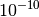

This function calculates multiple spectra of a crystal electric field acting upon a rare earth ion. It is a part of crystal field computation in Mantid and under active development. More documentation will follow as the development progresses.
Here is an example of how to fit function’s parameters to a spectrum. All parameters disallowed by symmetry are fixed automatically. Any other parameters that need fixing has to be tied explicitly. Peak centres (in meV) and intensities (in mb/sr) are also fixed and computed from the field parameters with the CrystalFieldPeaks function. Any other peak parameter can be set using the “f-index-dot-name” syntax (see CompositeFunction for more details).
import numpy as np
# Build a reference data set
fun = 'name=CrystalFieldMultiSpectrum,Ion=Ce,Temperatures=(44, 150),ToleranceIntensity=0.1,B20=0.37737,B22=3.9770,B40=-0.031787,B42=-0.11611,B44=-0.12544'
fun += ',f0.f1.FWHM=1.6,f0.f2.FWHM=2.0,f0.f3.FWHM=2.3,f1.f1.FWHM=1.6,f1.f2.FWHM=2.5,f1.f3.FWHM=3,f1.f4.FWHM=1'
# This creates a (empty) workspace to use with EvaluateFunction
x = np.linspace(0, 55, 200)
y = x * 0
e = y + 1
ws = CreateWorkspace(x, y, e)
# The calculated data will be in 'data', WorkspaceIndex=1
EvaluateFunction(fun, InputWorkspace=ws, InputWorkspace_1=ws, OutputWorkspace='data')
# Change parameters slightly and fit to the reference data
fun = 'name=CrystalFieldMultiSpectrum,Ion=Ce,Temperatures=(44, 150),ToleranceIntensity=0.1,Symmetry=C2v,B20=0.37,B22=3.9,B40=-0.03,B42=-0.11,B44=-0.12'
fun += ',f0.f1.FWHM=2,f0.f2.FWHM=2,f0.f3.FWHM=2,f1.f1.FWHM=2,f1.f2.FWHM=2,f1.f3.FWHM=2,f1.f4.FWHM=2'
fun += ',ties=(B60=0,B62=0,B64=0,B66=0,BmolX=0,BmolY=0,BmolZ=0,BextX=0,BextY=0,BextZ=0)'
# (set MaxIterations=0 to see the starting point)
Fit(fun, InputWorkspace='Workspace_0', WorkspaceIndex=1,
InputWorkspace_1='Workspace_1', WorkspaceIndex_1=1,
Output='fit',MaxIterations=100, CostFunction='Unweighted least squares')
# Using Unweighted least squares fit because the data has no errors.
| Name | Type | Default | Description |
|---|---|---|---|
| Ion | String | Mandatory | An element name for a rare earth ion. Possible values are: Ce, Pr, Nd, Pm, Sm, Eu, Gd, Tb, Dy, Ho, Er, Tm, Yb. |
| Symmetry | String | C1 | A symbol for a symmetry group. Setting Symmetry automatically zeros and fixes all forbidden parameters. Possible values are: C1, Ci, C2, Cs, C2h, C2v, D2, D2h, C4, S4, C4h, D4, C4v, D2d, D4h, C3, S6, D3, C3v, D3d, C6, C3h, C6h, D6, C6v, D3h, D6h, T, Td, Th, O, Oh |
| ToleranceEnergy | Double |  | Tolerance in energy in meV. If difference between two or more energy levels is smaller than this value they are considered degenerate. |
| ToleranceIntensity | Double |  |
Tolerance in intensity (in mb/sr). If difference between intensities of two or more transitions is smaller than this value the transitions are considered degenerate. |
| Background | String | FlatBackground | A name of a function to describe the background. |
| PeakShape | String | Lorentzian | A name of a function (peak type) to describe the shape of each peak. Currently Lorentzian (default) and Gaussian sre supported. |
| Temperatures | List of doubles | [1.0] | Temperatures of each spectrum in Kelvin. |
| FWHMs | List of double | [0.0] | The default full peak widths at half maximum for each spectrum. If not set explicitly via function parameters the peaks will have this width (not fixed). |
| FixAllPeakParameters | Bool | False | If True fix all parameters of the peak functions. The only parameters that will vary will be the field parameters. |
If the peak functions have any own attributes they can be accessed using the “f-index-dot-name” syntax (see CompositeFunction for more details).
| Name | Default | Description |
|---|---|---|
| BmolX | 0.0 | The x-component of the molecular field. |
| BmolY | 0.0 | The y-component of the molecular field. |
| BmolZ | 0.0 | The z-component of the molecular field. |
| BextX | 0.0 | The x-component of the external field. |
| BextY | 0.0 | The y-component of the external field. |
| BextZ | 0.0 | The z-component of the external field. |
| B20 | 0.0 | Real part of the B20 field parameter. |
| B21 | 0.0 | Real part of the B21 field parameter. |
| B22 | 0.0 | Real part of the B22 field parameter. |
| B40 | 0.0 | Real part of the B40 field parameter. |
| B41 | 0.0 | Real part of the B41 field parameter. |
| B42 | 0.0 | Real part of the B42 field parameter. |
| B43 | 0.0 | Real part of the B43 field parameter. |
| B44 | 0.0 | Real part of the B44 field parameter. |
| B60 | 0.0 | Real part of the B60 field parameter. |
| B61 | 0.0 | Real part of the B61 field parameter. |
| B62 | 0.0 | Real part of the B62 field parameter. |
| B63 | 0.0 | Real part of the B63 field parameter. |
| B64 | 0.0 | Real part of the B64 field parameter. |
| B65 | 0.0 | Real part of the B65 field parameter. |
| B66 | 0.0 | Real part of the B66 field parameter. |
| IB21 | 0.0 | Imaginary part of the B21 field parameter. |
| IB22 | 0.0 | Imaginary part of the B22 field parameter. |
| IB41 | 0.0 | Imaginary part of the B41 field parameter. |
| IB42 | 0.0 | Imaginary part of the B42 field parameter. |
| IB43 | 0.0 | Imaginary part of the B43 field parameter. |
| IB44 | 0.0 | Imaginary part of the B44 field parameter. |
| IB61 | 0.0 | Imaginary part of the B61 field parameter. |
| IB62 | 0.0 | Imaginary part of the B62 field parameter. |
| IB63 | 0.0 | Imaginary part of the B63 field parameter. |
| IB64 | 0.0 | Imaginary part of the B64 field parameter. |
| IB65 | 0.0 | Imaginary part of the B65 field parameter. |
| IB66 | 0.0 | Imaginary part of the B66 field parameter. |
| f0.f0.A0 | 0.0 | coefficient for linear term |
| f0.f1.Amplitude | 0.0 | Intensity scaling |
| f0.f1.PeakCentre | 0.0 | Centre of peak |
| f0.f1.FWHM | 0.0 | Full-width at half-maximum |
| f0.f2.Amplitude | 0.0 | Intensity scaling |
| f0.f2.PeakCentre | 0.0 | Centre of peak |
| f0.f2.FWHM | 0.0 | Full-width at half-maximum |
Categories: FitFunctions | General
C++ source: CrystalFieldMultiSpectrum.cpp (last modified: 2019-07-17)
C++ header: CrystalFieldMultiSpectrum.h (last modified: 2018-10-05)